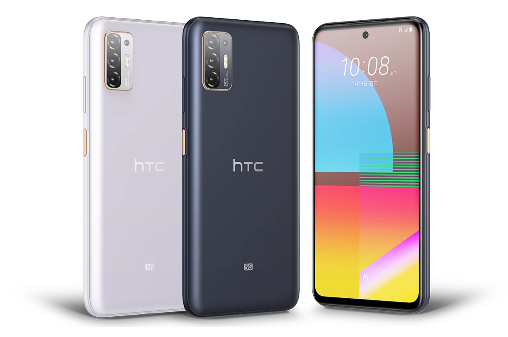

htc
HTC Corporation High Tech Computer Corporation, literally Hongda International Electronics Co., Ltd.; trading as HTC) is a Taiwanese consumer electronics company headquartered in Xindian District, New Taipei City, Taiwan. Founded in 1997, HTC began as an original design manufacturer and original equipment manufacturer, designing and manufacturing laptop computers.[2]
After initially making smartphones based mostly on Windows Mobile, HTC became a co-founding member of the Open Handset Alliance, a group of handset manufacturers and mobile network operators dedicated to the development of the Android operating system.[3] The HTC Dream (marketed by T-Mobile in many countries as the T-Mobile G1) was the first phone on the market to run Android.
2009


2021
